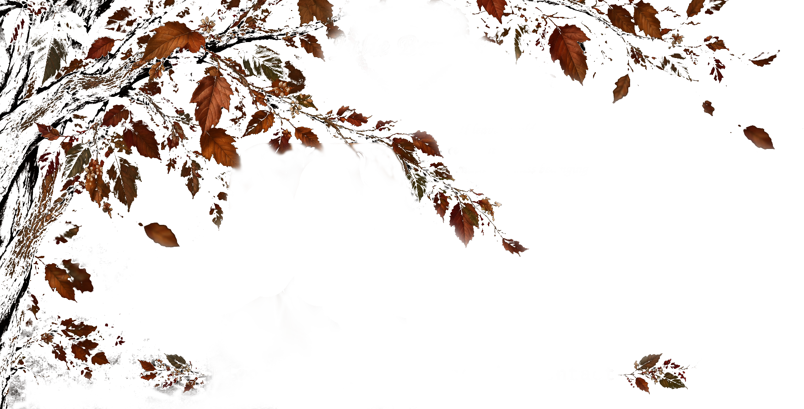

Julie Bennet

If leaves could speak
Every autumn they'd tell how
much they miss belonging
Actress Information
Age: 14
Gender: Female
Height: 152 cm
Hair: Carrotted
Eyes: Gray
Locality: London, Great Britain
Early Career
Born in Essex, Great Britain, Julie's talent for acting started in Primary School when she was part of the school's customary act plays. Her first role was that of an autumn tree in the play Wizard of Oz and since she wanted more active roles she signed up for the acting group in school. Her father, being part pianist, part warehouse worker, was supportive of the art of acting and spent evening hours helping her rehearsal for school and later on for community group meetings each weekend as well. Mother half absent due to prolonged hospital stays before passing.
Roles of Mention
- Voice Actress in Speak No Evil
- Extra in Harry Potter (Series)
Current Occupation
Thanks to her early roles in voice acting, latest appearance in film, and community engagement she got accepted and enrolled extra courses at London School of Dramatic Art to enhance her acting skills.